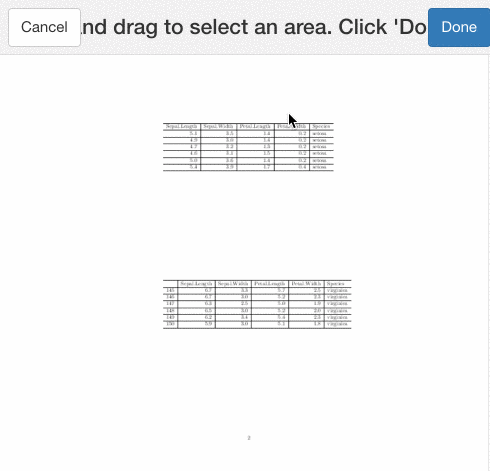
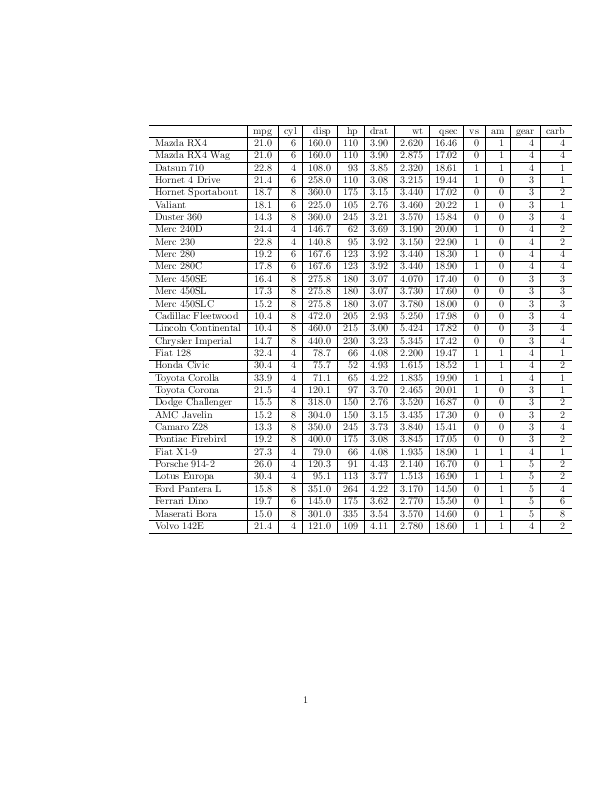

tabulizerパッケージによるPDF表データからのデータ取得
ROpenSciの実験的パッケージリポジトリropenscilabsで、便利そうなパッケージを見つけた。使ってみた感じ、PDFからのデータ取得の決定版となりそうな大変便利なパッケージであることがわかったので、その機能を試しておく。
ROpenSciの実験的パッケージリポジトリropenscilabsで、便利そうなパッケージを見つけた。{tabulizer}というものだ。このパッケージはTabulaというオープンソースツールの機能を利用して、PDF中に含まれる表から、値を取り出すというもの。
政府や企業の報告書はPDFであることが多く（二次利用を想定していないのだろうが）、表としてデータが収められていることがしばしばある。PDFからのデータ取得方法として、Rでは {tm}を使う方法や{pdftools}を利用する方法がそれぞれあるが、{pdftools}ではテキストベースでの抽出となるため、表データの抽出からRの特徴とも言えるデータフレーム形式への変換が困難であった。そこでこの{tabulizer}を使うことで、PDFに含まれる表データの抽出が可能となり、Rで扱えるデータの幅が広がることが考えられる。
使ってみた感じ、PDFからのデータ取得の決定版となりそうな大変便利なパッケージであることがわかったので、その機能を試しておく。
パッケージは現在CRANには登録されていないのでGitHubのリポジトリからダウンロードしてくる。利用の際に{tabulizerjars}というパッケージも必要になるのでこちらもインストール（{rJava}に依存しているのでWindows環境では面倒かも）。なおGitHubリポジトリ上のインストールの際は{githubinstall}を利用するのが楽。
library(githubinstall)
githubinstall(c("tabulizerjars", "tabulizer"))使い方
GitHubのvignettesに解説記事があるが一通り紹介しておく。
library(tabulizer)PDFからの表データ取得: extract_tables
メインとなる関数がextract_tables()。この関数では引数に与えたPDFファイル（ローカル上でもウェブ上でも良い）に含まれる表からデータを抽出する。引数がいくつか用意されていて、PDFへのパス以外何も指定しない場合にはすべてのPDFのページを対象に表データの抽出を実行する。返り値は行列のリストが初期値となっている。
例として、{tabulizer}パッケージインストール時に付属するPDFファイルを対象に操作してみる。なおこのファイルは https://github.com/leeper/tabulizer/raw/master/inst/examples/data.pdf にあるものと同じなので、実行結果を比較してみたい方はリンク先のPDFを見てもらうと良いだろう。
path2pdf <- system.file("examples", "data.pdf", package = "tabulizer")
out <- extract_tables(path2pdf)
class(out) # リストクラス
# 表データの取り出し
out[[1]] %>% head()Rで利用する場合はデータフレームであると何かと都合が良いので、データフレームとして取り出すオプションとして、引数methodが用意されている。*method*="data.frame"でリストの中身がデータフレームとして与えられるようになる。
out <- extract_tables(path2pdf,
pages = 2,
method = "data.frame")
out今回はpages引数で対象ページを指定した。ページ内に複数の表が存在する場合にはデータフレームも２つになる。
引数methodは既定値でmatrixだが、data.frameやcharacterも選べるようになっている。またさらなるオプションとして、取得結果をRのオブジェクトではなくcsvやtsv、json形式で保存するようにも設定できる。保存の際は作業ディレクトリではなくPDFが位置するディレクトリに作成される（ウェブ上のPDFを対象にすることはできない）。
extract_tables(path2pdf,
pages = 3,
method = "csv")
# [1] "/Library/Frameworks/R.framework/Versions/3.3/Resources/library/tabulizer/examples"表の部分的な抽出もarea引数の指定により可能となっている。これは１つのページから複数のテーブルデータを得る場合などに役立つ。areaはlist()でPDFの座標位置（上左下右の順番）を与える必要があるので闇雲に対象のデータがある座標を探すことになってしまうが、その際は次のlocate_areas()を利用すると良いだろう。
extract_tables(path2pdf,
pages = 2,
area = list(c(126, 149, 212, 462)),
method = "data.frame")インタラクティブな操作で取得範囲を指定
Shiny Widgetsの機能を利用したlocate_areas()またはextract_areas()の実行により、インタクティブに取得範囲を指定できるようになる。これは対象のPDFをブラウザ上に描画させ、データ取得を実行する範囲をユーザーで指定する（ドラックで範囲指定）というもの。

locate_areas(path2pdf, pages = 2, widget = "shiny")
# [[1]]
# top left bottom right
# 123.6069 159.5029 208.3006 287.6879 返り値の座標をextract_tables()のarea引数の値として与えてみると
extract_tables(path2pdf,
pages = 2,
method = "data.frame",
area = list(c(120, 150, 210, 280)))見事に該当箇所のデータが取得できた！
もう一つのextract_areas()関数の方は、指定箇所のデータを直接取得するというもの。
extract_areas(path2pdf, pages = 2)
# [[1]]
# [,1]
# [1,] "Petal.Length"
# [2,] "1.4"
# [3,] "1.4"
# [4,] "1.3"
# [5,] "1.5"
# [6,] "1.4"
# [7,] "1.7" メタ情報の取得: extract_metadata
関数extract_metadata()は対象PDFのメタ情報（タイトルやページ数、作成日など）を取得する関数となっている。PDFの概要を知りたい場合に便利だろう（pdftools::pdf_info()と同様の機能）。
# extract_metadata関数によって取得されるメタデータ
extract_metadata(path2pdf) %>% names()表サイズの確認
これはextract_tables()での引数areaの指定に役立つと思われる。
get_page_dims(path2pdf)
get_n_pages(path2pdf) # ページ数PDFの分割と結合: split_pdf / merge_pdfs
PDFを分割したり、複数のPDFを結合する関数が用意されている。
# 一時フォルダに各ページのPDFが保存される
(sf <- split_pdf(path2pdf))
# [1] "/var/folders/8f/s_lbgwks6q7g3lz52q93ngph0000gn/T//Rtmpx4BCAz/data1.pdf" "/var/folders/8f/s_lbgwks6q7g3lz52q93ngph0000gn/T//Rtmpx4BCAz/data2.pdf"
# [3] "/var/folders/8f/s_lbgwks6q7g3lz52q93ngph0000gn/T//Rtmpx4BCAz/data3.pdf"
# PDFを結合
merge_pdfs(sf, "merge.pdf")PDFのサムネイル生成
pdftools::pdf_render_page()と同じように、PDFの各ページについてサムネイル画像を生成する関数が用意されている。make_thumbnails()にPDFのパスを与えると、PDFがあるフォルダにpng形式の画像ファイルが生成される（出力先や画像ファイルの拡張子は引数の指定により変更可能。）
make_thumbnails(path2pdf,
pages = 1,
format = "png",
resolution = 72L,
outdir = "inst/")
Share this post
Twitter
Google+
Facebook
Reddit
LinkedIn
StumbleUpon
Email